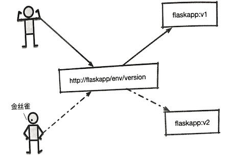
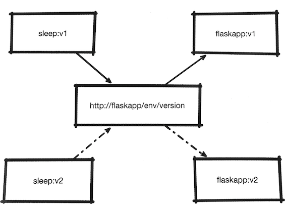
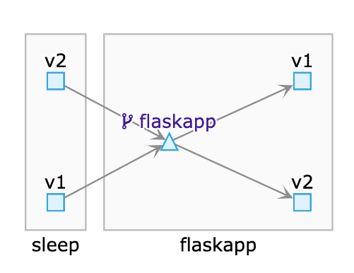
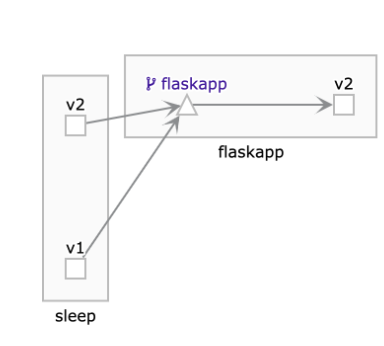
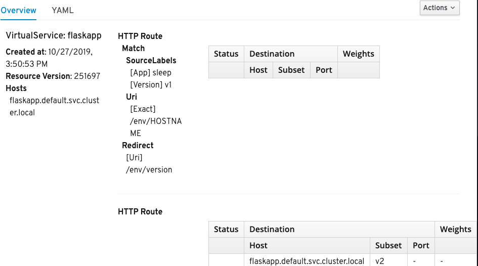
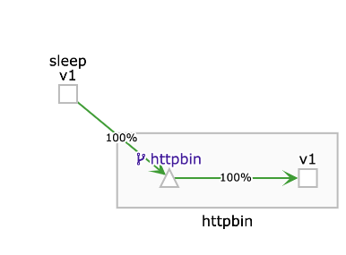

第十节 HTTPS流量管理(金丝雀部署/源服务进行路由/URI进行重定向)
- 1 金丝雀部署
- 2 根据来源服务进行路由
- 3 对
URI进行重定向
1、金丝雀部署
简单说来，金丝雀部署就是在发布新版本时，部署的新版本并不对外开放，而是选择一小部分用户为测试目标，这部分用户对服务的访问会指向特定的版本，通过对这些金丝雀用户的使用情况的观察，来确定新版本服务的发布效果，在确定结果之前, 所有其他用户都继续使用原有版本。
这里还是以flaskapp为例，按照案例需求，我们假定v1是旧版本，v2是新版本。在发布新版本时 , 选择一部分用户作为金丝雀用户，在金丝雀用户访问 flaskapp 时产生流量的HTTP header中会有一行lab:canary, 我们会用该内容区别用户， 其他登录用户和匿名用户全部访问就版本flaskapp,金丝雀用户在访问flaskapp时会访问新版本的flaskapp，整体场景如下

根据HTTP内容进行路由的能力, 这里可以针对金丝雀用户的需求，再次修改我们的VirtualService
apiVersion: networking.istio.io/v1alpha3
kind: VirtualService
metadata:
name: flaskapp
spec:
hosts:
- flaskapp.default.svc.cluster.local
http:
- match:
- headers:
lab:
exact: canary
route:
- destination:
host: flaskapp.default.svc.cluster.local
subset: v2
- route:
- destination:
host: flaskapp.default.svc.cluster.local
subset: v1
将YAML内容保存为canary.virtualservice.yaml使用kubectl apply命令将其提交到Kubernetes集群、进人sleep Pod开始测试：
$ kubectl apply -f canary-virtualservice.yaml
virtualservice.networking.istio.io/flaskapp created
$ kubectl exec -it sleep-6c9c898f6c-snzx5 -c sleep bash
bash-4.4# http --body http://flaskapp/env/version
v1
重复执行几遍，会看到在默认情况下访问的都是v1版本的flaskapp。
我们可以在请求中加入lab:canary Header，再次调用flaskapp
http --body http://flaskapp/env/version lab:canary
v2
可以看到这次得到的是v2版本的返回值。
把canary换成phoenix再试验一下
bash-4.4# http --body http://flaskapp/env/version lab:phoenix
v1
可以发现不符合判断条件，生效的仍然是v1版本
对于这个VirtualService我们需要了解以下内容。
- 这里也在
http字段定义了两个路由(HTTPRoute对象，区别是这次加人了一个match字段match字段提供了丰富的匹配 功能其匹配范围不仅包括HTTP Header,还包括uri、scheme、method、authority,端口，来源标签和gateway等 - 这里使用的是针对
http header的匹配，要求lab的取值必须完全匹配canary,这里除了可以使用代表完全相等的exact动词，还可以使用prefix和regex，分别代表前缀和正则表达式的匹配方式
2、根据来源服务进行路由
我们根据用户发出的请求中的HTTP Header进行了转发。在实际工作中还存在另一种情况：
来自不同版本的服务访问不同版本的目标服务
- 比如
v1版本的sleep向flaskapp发出的请求由flaskapp的v1版本提供响应， - 其他版本由
flaskapp的v2版本负责，如图所示。

sourceLabels-virtualservice.yaml
apiVersion: networking.istio.io/v1alpha3
kind: VirtualService
metadata:
name: flaskapp
spec:
hosts:
- flaskapp.default.svc.cluster.local
http:
- match:
- sourceLabels:
app: sleep
version: v1
route:
- destination:
host: flaskapp.default.svc.cluster.local
subset: v1
- route:
- destination:
host: flaskapp.default.svc.cluster.local
subset: v2
使用kubectl apply更新VirtualService，然后分别进人两个版本的sleep Pod进行
$ kubectl exec -it sleep-v1-548d87cc5c-wfk7v -c sleep bash
bash-4.4# http --body http://flaskapp/env/version
v1
$ kubectl exec -it sleep-v2-7c6b874968-hl6dj -c sleep bash
bash-4.4# http --body http://flaskapp/env/version
v2
侧试结果很清楚,从sleep服务的v1版本发给flaskapp的请求，由flaskapp的v1版本进行了处理，跟我们的预期是一致的。

在上面的VirtualService定义里，用SourceLabels对来源路由进行了匹配，app标签为sleep标签为version标签v1的请求，会被发送给flaskapp的v1版本进行处理, 其他来源的请求由V2 版本进行匹配。
3、 对URI进行重定向
还有另外一种对目标路由的分流方式，即根据URL进行重定向
例如，v2版本的sleep服务发起对flaskapp服务"/env/HOSTNAME"路径的请求， 那么将其照实返回；
如果请求来自v1版本的sleep服务,那么将其请求路径由 "/env/HOSTNAME"修改为"/env/version"。将flaskapp.virtualservice.yaml的spec字段修改为如下内容：
uri-virtualservice.yaml
apiVersion: networking.istio.io/v1alpha3
kind: VirtualService
metadata:
name: flaskapp
spec:
hosts:
- flaskapp.default.svc.cluster.local
http:
- match:
- sourceLabels:
app: sleep
version: v1
uri:
exact: "/env/HOSTNAME"
redirect:
uri: /env/version
- route:
- destination:
host: flaskapp.default.svc.cluster.local
subset: v2
分别进入两个sleep pod v1，v2
$ kubectl exec -it sleep-v1-548d87cc5c-wfk7v -c sleep bash
bash-4.4# http http://flaskapp/env/HOSTNAME
HTTP/1.1 301 Moved Permanently
content-length: 0
date: Sun, 27 Oct 2019 07:54:40 GMT
location: http://flaskapp/env/version
server: envoy
kubectl exec -it sleep-v2-7c6b874968-hl6dj -c sleep bash
http http://flaskapp/env/HOSTNAME
HTTP/1.1 200 OK
content-length: 27
content-type: text/html; charset=utf-8
date: Sun, 27 Oct 2019 07:55:39 GMT
server: envoy
x-envoy-upstream-service-time: 1
flaskapp-v2-d5bc47bf5-5kk5k


在v1中会发现返回一个301指令，我们在指令中加入重定向的指令再次尝试
$ kubectl exec -it sleep-v1-548d87cc5c-wfk7v -c sleep bash
bash-4.4# http --follow http://flaskapp/env/HOSTNAME
HTTP/1.1 200 OK
content-length: 2
content-type: text/html; charset=utf-8
date: Sun, 27 Oct 2019 07:59:25 GMT
server: envoy
x-envoy-upstream-service-time: 1
v2
这一次成功看到发生了重定向，即最终由“/env/version”路径处理了我们的请求。
在这次的VirtualService定义中，将由v1版本的sleep服务发起的到http://flaskapp/env/HOSTNAME的请求，用301指令进行了重定向。
这里要注意：redirect指令会把URI进行整体替换，因此灵活性不高；
另外301指令无法支持Post方法。
例如我们想要给httpbin设置一个使用Post方法的重定向，则可编写如下代码：
apiVersion: networking.istio.io/v1alpha3
kind: VirtualService
metadata:
name: httpbin
spec:
hosts:
- flaskapp.default.svc.cluster.local
http:
- match:
- uri:
exact: "get"
redirect:
uri: /post
- route:
- destination:
host: flaskapp.default.svc.cluster.local
将这一段代码保存到httpbin.virtualservice.yaml中，并使用kubectl apply将其提交到Kubernetes集群。
这里定义了将对httpbin服务“/get”路径的访问重定向到“/post"上，下面用sleep Pod发起请求测试一下：
$ kubectl get vs
NAME GATEWAYS HOSTS AGE
flaskapp [flaskapp.default.svc.cluster.local] 32m
httpbin [flaskapp.default.svc.cluster.local] 5s
我遇到的问题：
bash-4.4# http -f POST http://httpbin:8000/post data=nothing
HTTP/1.1 503 Service Unavailable
content-length: 95
content-type: text/plain
date: Sun, 27 Oct 2019 08:27:56 GMT
server: envoy
upstream connect error or disconnect/reset before headers. reset reason: connection termination
原因我错误的修改了
mlts，变成了global enabled
$ kubectl get MeshPolicy default -oyaml
apiVersion: authentication.istio.io/v1alpha1
kind: MeshPolicy
metadata:
annotations:
kubectl.kubernetes.io/last-applied-configuration: |
{"apiVersion":"authentication.istio.io/v1alpha1","kind":"MeshPolicy","metadata":{"annota
tions":{},"name":"default"},"spec":{"peers":[{"mtls":{}}]}}
creationTimestamp: "2019-10-18T09:23:09Z"
generation: 2
name: default
resourceVersion: "198498"
selfLink: /apis/authentication.istio.io/v1alpha1/meshpolicies/default
uid: f1b9dc29-d94c-415d-b879-25c71a3d4769
spec:
peers:
- mtls: {}
解决方式，该回到
permissive,
$ kubectl edit MeshPolicy default
meshpolicy.authentication.istio.io/default edited
peers:
- mtls:
mode: PERMISSIVE
$ kubectl exec -it sleep-v1-548d87cc5c-wfk7v -c sleep bash
http -f POST http://httpbin:8000/post data=nothing
HTTP/1.1 200 OK
access-control-allow-credentials: true
access-control-allow-origin: *
content-length: 586
content-type: application/json
date: Sun, 27 Oct 2019 09:24:50 GMT
server: envoy
x-envoy-upstream-service-time: 6
{
"args": {},
"data": "",
"files": {},
"form": {
"data": "nothing"
},
"headers": {
"Accept": "*/*",
"Accept-Encoding": "gzip, deflate",
"Content-Length": "12",
"Content-Type": "application/x-www-form-urlencoded; charset=utf-8",
"Host": "httpbin:8000",
"User-Agent": "HTTPie/0.9.9",
"X-B3-Parentspanid": "159205ecd8ddc070",
"X-B3-Sampled": "1",
"X-B3-Spanid": "cda267c471801f5e",
"X-B3-Traceid": "fda0d72802b78b9c159205ecd8ddc070"
},
"json": null,
"origin": "127.0.0.1",
"url": "http://httpbin:8000/post"
}

可以看到，POST成功。我们再次发起请求，这次请求的目标是"/get":
bash-4.4# http --follow -f POST http://httpbin:8000/get data=nothing
HTTP/1.1 405 Method Not Allowed
access-control-allow-credentials: true
access-control-allow-origin: *
allow: OPTIONS, POST
content-length: 178
content-type: text/html
date: Sun, 27 Oct 2019 09:32:51 GMT
server: envoy
x-envoy-upstream-service-time: 3
<!DOCTYPE HTML PUBLIC "-//W3C//DTD HTML 3.2 Final//EN">
<title>405 Method Not Allowed</title>
<h1>Method Not Allowed</h1>
<p>The method is not allowed for the requested URL.</p>
这次发生了重定向， 但是很明显， 并没有满足我们的要求， Istio还提供了Rewrite的方式来提供这种在调用前进行URI重写的支持。
下面再次修改httpbin的路由规则， 把redirect修改为rewrite
apiVersion: networking.istio.io/v1alpha3
kind: VirtualService
metadata:
name: httpbin
spec:
hosts:
- httpbin.default.svc.cluster.local
http:
- match:
- uri:
exact: "/get"
rewrite:
uri: /post
route:
- destination:
host: httpbin.default.svc.cluster.local
- route:
- destination:
host: httpbin.default.svc.cluster.local
在提交新的规则之后，再次进入Sleep Pod进行尝试：
bash-4.4# http -f POST http://httpbin:8000/get data=nothing
HTTP/1.1 301 Moved Permanently
connection: close
content-length: 0
date: Sun, 27 Oct 2019 09:43:13 GMT
location: http://httpbin:8000/post
server: envoy
这次完成了对post方式改写
rewrite方法和rediret方法不同之处在于，在rewrite方法的match一节必须包含对目标的定义。并且，rewrite方法和rediret方法不能共存。